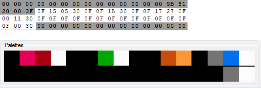

Виды адресов
Вернуться на главную страницу
Содержание
Виды адресов
Динамические данные могут храниться в различном формате. Некоторые форматы выглядят в RAM достаточно очевидно, например численное количество чего-либо. Некоторые могут быть непонятны на первый взгляд, вроде указателей или порядкового номера объекта.
Способ хранения данных, а также то, какие именно адреса существуют, зависят от самой игры. Если ты достаточно хорошо знаком с игрой в качестве рядового игрока, а не ромхакера, тебе будет проще опознать эти адреса. С незнакомыми играми работать несколько сложнее, но в целом это не критично.
Все случаи описать здесь не получится, будет рассказано только про самые распространенные. Выбери опцию из списка, чтобы посмотреть информацию по этому виду адресов.
| Жизни |
Таймеры |
Счетчики |
Координаты |
Скорость |
Кнопки |
Очки |
| Рандом |
Индикаторы |
Номера |
Временные |
Диапазоны адресов |
Прочие |
Жизни
К этой категории адресов относятся не только жизни, но еще HP (Health Points - очки здоровья) и Continue (количество продолжений после Game Over).
Это одни из самых популярных адресов, которые ищут новички, так как на них делаются первые тестовые хаки, связанные с изменением начальных значений и бесконечностью данных игровых параметров.
Оообенности
Количество жизней хранится в одном адресе. Встречаются 2 распространенных случая, в зависимости от кода игры на проверку Game Over и отображения жизней на экране.
В первом случае количество жизней в адресе равно тому, что выводится на экране, то есть 3 жизни = #$03. Во втором случае количество жизней будет меньше на #$01, то есть 3 жизни = #$02.
Персонаж гарантированно имеет некое количество жизней лишь тогда, когда он получает способность умирать и продолжать игру после смерти. Если играть без смертей, а также не получать дополнительные жизни разничными бонусами, количество жизней в адресе останется без изменений.
Персонаж гарантированно теряет жизнь только тогда, когда тот полностью завершит анимацию смерти, чтобы он воскрес/уровень начался заново, так как в момент смерти количество жизней может сразу не измениться. Чаще всего значение в адресе будет уменьшено.
Отдельные случаи
В игре Mortal Kombat Trilogy - MK5 (вероятно и в других тоже) байт в адресе с HP увеличивается при получении урона, а не уменьшаться. Персонаж умрет, когда это количество достигнет определенного значения.
В игре Darkwing Duck жизни хранятся сразу в двух адресах, а количество HP сразу в четырех, причем байты в этих адресах являются номерами тайлов. Это сделано для удобства отображения их количества на экране и во время паузы.
Методы поиска
Hex Editor
Сравниваешь 2 сохранения, в которых количество жизней отличается на #$01. Также можно попробовать воспользоваться поиском предполагаемого байта и проверить все найденные адреса.
В предполагаемом найденном адресе увеличиваешь количество и пробуешь умирать, проверяешь чтобы отображаемых жизней стало больше. Если количество жизней выводится на экране во время игры, возможно ты сразу увидишь изменения числа.
Заморозив байт в адресе с жизнями, твой персонаж должен перестать терять жизни после смерти.
Для безопасности лучше замораживать байт #$02 и выше, иначе в некоторых случаях все равно может случиться Game Over. Это зависит от особенности кода игры, который проверяет на Game Over после уменьшения жизней.
RAM Search
Получив начальные жизни, отсеиваешь адреса, в которых записан байт #$00, через Not Equal To + Specific Value 00.
Немного поиграв и не умерев, отсеиваешь адреса без изменений через Equal To + Previous Value.
Затем умираешь, дожидаешься воскрешения и ставишь условие на Less Than/Not Equal To/Different By 01 + Previous Value для проверки на изменения.
Или можно сразу поставить условие на определенное количество жизней через Equal To + Specific Value xx, но ты можешь не угадать с байтом, испортив себе весь подготовительный поиск (нажми кнопку Undo для отмены).
Таймеры
Под таймером подразумевается отсчет чего-либо до завершения действия этого события. К этой категории относятся таймер неуязвимости, действия бонусов, внутриигровое время и так далее. То есть длительность того, таймер чего изменяется каждый кадр (или каждый внутриигровой кадр).
Оообенности
Поскольку таймер это отсчет до завершения, скорее всего байт в адресе будет ежекадрово уменьшаться на #$01. В редких случаях будет увеличиваться на #$01.
Если таймер в данный момент не используется, например когда у персонажа отсутствует неуязвимость, в адресе должно быть записано #$00.
Большие таймеры
Один адрес может хранить значение от 0 до 255. Если таймер длится дольше 255 кадров, он будет использовать сразу 2 адреса, которые в сумме создают 16-битное число, увеличивая лимит до 65535.
Старший байт такого счетчика будет уменьшаться только тогда, когда полностью уменьшится младший байт счетчика. Вот пример счетчика, который считает от 600 до 0, значение уменьшается ежекадрово на протяжении 10-ти кадров.

Эти 2 адреса могут находиться где угодно, не обязательно по соседству друг с другом.
Таймер времени
Чтобы сэмулировать точные реальные часы, требуются адреса с терциями (терция = 1/60 секунды), секундами, минутами и, возможно, часами.
Терции, секунды и минуты должны хранить байт не более #$3C (60). В зависимости от кода, это может быть байт #$3D. Минуты уменьшаются/увеличиваются после секунд, а секунды после терций.

Адрес с терциями существует практически у таймера, который отображается на экране. Если игра не пытается создать точные часы, байт в нем будет меньше, чем #$3C.
Счетчик кадров
Этот тип адреса больше подходит к таймерам, чем счетчикам, так как его значение постоянно ежекадрово увеличивается на #$01, и его можно спутать с таймером.
Счетчик кадров существует практически во всех играх. Обычно он служит для вычисления рандома. А факт того, что он увеличивается ежекадрово, позволяет легко прикручивать свои собственные ежекадровые подпрограммы к тому месту в коде, где выполняется инструкция его увеличения.
Особые случаи
В игре Battle City счетчик кадров участвует в паре с адресами таймеров бонусов для вычисления их длительности, что создает практически точный секундный таймер (64 терции вместо 60). Бонусы длятся по 10/20 секунд с дополнительной небольшой погрешностью, так как при взятии бонуса счетчик кадров не изменяется.
В игре Super Mario Bros. единицы, десятки и сотни у числа таймера хранятся в трех отдельных соседних адресах в формате BCD (binary-coded decimal). Подробнее про этот формат прочитаешь в подразделе с адресами очков.
Метод поиска
Hex Editor
Подбираешь бонус/получаешь урон, затем просматриваешь адреса RAM в поисках чего-либо, что хоть как-то напоминает счетчик. Ориентируйся по самой игре, чтобы таймер в адресе и действие бонуса/неуязвимости в игре заканчивались одновременно.
Адрес найден правильно, если при заморозке байта таймер неуязвимости/бонуса станет длиться бесконечно. Счетчик времени полностью остановится лишь в случае заморозки адреса с терциями.
Если записать какой-то байт в таймер действия бонуса/неуязвимости, это может активировать данную игровую функцию. В противном случае вероятно существует еще какой-то адрес, в котором хранится текущее "состояние" игрока, например факт активированной неуязвимости.
RAM Search
Пока таймер деактивирован, отсеиваешь адреса, в которых записаны байты кроме #$00, через Equal To + Specific Value 00.
Подобрав бонус/получив урон, отсеиваешь адреса, в которых записан байт #$00, через Not Equal To + Specific Value 00.
Debugger
Если по каким-то причинам ты нашел лишь один из адресов таймера, но не можешь найти остальные, поставь Write брейкпоинт на найденный адрес. Ты обнаружишь программу, где происходит вычисление общего таймера, в которой ты найдешь и другие адреса таймера, участвующие в работе этой программы.
Счетчики
Под счетчиком подразумевается подсчитывание количества чего-либо. Например, количество собранных бонусов, количество оставшихся врагов на уровне, количество забитых голов и тому подобное.
В отличие от таймеров, счетчики изменяются не ежекадрово, а лишь при особом игровом событии, возникновение которого нужно подсчитать.
Оообенности
В зависимости от предназначения счетчика, он может либо увеличиваться на #$01, если нужно посчитать сколько раз было что-то сделано, либо уменьшаться, например нужно убить столько-то врагов для завершения уровня.
Счетчики, которые по логике должны уменьшаться, в действительности вполне могут и увеличиваться, а затем проверяться на определенное число.
Отдельные случаи
В игре Bugs Bunny Crazy Castle сбор всех морковок для завершения уровня проверяется не по общему счетчику морковок, а по факту подбора всех морковок по отдельности, для каждой из которых выделен свой адрес.
В игре Battle City для количества врагов выделено сразу 2 адреса. Один из них служит для подсчета количества врагов, которых нужно уничтожить на уровне. Во втором хранится количество врагов, которые еще не появились.
Метод поиска
Аналогичен поиску адресов с жизнями. А также если записать #$00 в адрес счетчика врагов, вполне возможно уровень сразу будет завершен.
Координаты
Координаты служат в основном для отображения объектов на экране. Всегда имеются главные координаты объекта, но также могут существовать и другие, которые относятся, например, к отображению объекта на миникарте или различным индикаторам объекта, вроде циферки над ним.
Технически любой игровой объект размером 1 пиксель. При помощи кода вокруг него рисуется графика, а еще создается некая область, при соприкосновении с которой другие объекты могут наносить ему урон (хитбоксы), и/или наоборот, получать урон от этого объекта (хертбоксы).
Особенности
Начальная позиция (0,0), откуда начинается отсчет координат, чаще всего расположена в верхнем левом уголу экрана, относительно которой изменяется координата во время движения объекта.
У игр региона NTSC не отображаются верхние и нижние 8 пикселей экрана, что можно изменить в настройках эмулятора.
У координат может существовать дробная часть пикселя, подробности читай в подразделе с адресами скорости.
Адреса с координатами для всех игровых объектов скорее всего будут находиться где-то по соседству.
Главные адреса координат
Главными адресами считаются те, от которых зависят все остальные адреса с координатами. Изменяя главные адреса, ты будешь влиять и на изменение зависимых адресов.
Основными осями координат являются X (горизонталь) и Y (вертикаль). В некоторых играх может существовать третья ось координат - Z (высота).
Если уровень по размеру больше, чем 256 пикселей, и/или когда объект может уйти за экран, но в действительности не удаляется из игры и его можно успеть догнать, будет существовать старший байт адреса координты.

Камера
Если уровень может скроллиться в какую-либо сторону, ты можешь найти адреса со старшими и младшими координатами позиции камеры. Адреса будут меняться в том случае, если движение персонажа приводит к смещению камеры.
Координаты камеры скорее всего будут зависеть от главных координат персонажа, а не наоборот.
Если предполагается, что объект всегда находится на экране, то при наличии адресов координат камеры возможно не будет существовать адрес со старшим байтом координаты объекта, так как в нем нет необходимости.
Отдельные случаи
В игре Teenage Mutant Ninja Turtles III - The Manhattan Project адреса с хитбоксами находятся в отдельных адресах, а не вычисляются относительно основных координат.
В игре Super Mario Bros. младший байт координаты Y = #$00 не в самом верху экрана, а под статусбаром (где очки и таймер). Находясь под статусбаром, старший байт координаты Y = #$01.
Метод поиска
Hex Editor
Нужно двигаться персонажем и наблюдать за адресами, которые напоминают его координаты.
Если изменять байты в главных адресах координат, объект должен телепортироваться. Последствия телепорта внутрь стены/пола/платформы непредсказуемы. Если это не главный адрес, байт скорее всего будет сразу же перезаписан игрой.
Если заморозить младший байт, объект должен перестать иметь возможность двигаться по соответствующей оси. Если заморозить старший байт, объект сможет продолжать двигаться, но при попытке увеличить старший байт координаты объект будет телепортирован в другую часть экрана.
RAM Search
Пока персонаж стоит на месте, отсеивай адреса без изменений через Equal To + Previous Value. Также если ты предполагаешь, что твои координаты сейчас не равны #$00, дополнительно фильтруй через Not Equal To + Specific Value 00.
Затем сдвинься в сторону по X и Y и остановись. Разово исключи изменившиеся адреса через Not Equal To + Previous Value. Переключись на Equal To + Previous Value и продолжай отсев. При необходимости повтори движение в сторону.
Скорость
Скорость - это байты, которые будут складываться/вычитаться с координатами объектов, создавая эффект их передвижения. Чем выше скорость, тем быстрее объект будет смещаться в ту или иную сторону по соответствующей оси.
Особенности
Если объект может динамически менять скорость движения, например при ходьбе/беге, скорость скорее всего будет храниться в RAM, и изменяться одновременно с изменениями координат объекта, пока объект разгоняется.
Адреса скоростей, как и координаты, скорее всего находятся где-то по соседству для всех объектов сразу.
Для движения вправо используются положительные байты, а для движения влево - отрицательные. Сторона движения обычно определяется адресом, в котором хранится то, куда повернут объект, и скорее всего в нем будут байты #$00/#$80.
Чаще всего для смещения объекта в любую сторону существует одна общая программа, которая складывает значения координат со скоростью. Если координата складывается с положительным байтом, она будет увеличиваться, а если с отрицательным, то уменьшаться.
Точная скорость
1 целый пиксель - довольно большая единица измерения движения, с учетом того, что объекты со скоростью 1 и 2 пикселя за кадр будут слишком быстрые/медленные относительно друг друга. Для более точного измерения скорости вводится адрес, в котором хранится дробная часть пикселя.
Отобразить движение на дробную часть пикселя игра не сможет, однако на длительном промежутке разница в скорости станет заметна. Чем больше дробная часть, тем быстрее будет двигаться объект.

Если существует адрес скорости с дробной частью пикселя, тогда будет существовать такой же адрес и у координаты, поскольку эту дробную часть пикселя потребуется сложить с такой же дробной частью, а при получении целого пикселя добавить его к целой части коордитаны.
Гравитация
Если в игре существует плавная гравитация, почти наверняка можно найти адреса с дробной частью пикселя для осей Y/Z.
В начале прыжка записывается положительная скорость смещения, благодаря которой персонаж может подпрыгнуть. Эта скорость будет постепенно уменьшаться и превращаться в отрицательную, что создает эффект гравитации, когда персонаж достигает максимальной высоты и начинает падать.
Отдельные случаи
В игре Battle City скорость разных типов танков не хранится в RAM. Вместо этого игра проверяет номер кадра и решает, следует ли ей изменить их координаты во время движения, что позволяет создавать различные скорости для разных танков.
В игре Super Mario Bros. скорость движения по X хранится в одном-единственном адресе, который на мой взгляд является таймером разгона персонажа, нежели скоростью. В зависимости от величины таймера код игры вычисляет скорость смещения координаты X.
Метод поиска
Hex Editor
Нужно двигаться персонажем и наблюдать за адресами, которые изменяются вместе с его координатами. Значение в адресе с целым пикселем должно быть примерно равно тому значению, на которое ежекадрово изменяется координата.
Заморозив байт больше #$00 в адресе целого пикселя, объект может начать двигаться по соответствующей оси без удержания кнопки движения. Если ты можешь управлять этим объектом в игре, скорее всего он не будет воспроизводить анимацию движения.
Последствия прохождения сквозь стену/пол/платформу непредсказуемы. Возможно потребуется увеличить байт, если объект упирается в стену и отказывается проходить сквозь нее, так как код игры выталкивает объект оттуда.
Заморозка дробной части пикселя вряд ли заставит объект двигаться, если в данный момент целый пиксель = #$00. Игра может экономить ресурсы процессора, игнорируя проверку дробной части, считая, что в этом случае объект не двигается.
Если во время прыжка заморозить положительный байт в адресе со скоростью смещения Y/Z, это заставит объект постоянно набирать высоту и не падать.
Debugger
Поставь Write брейкпоинт на адрес координат во время движения объекта, и наверняка ты сразу обнаружишь с какими адресами складываются его координаты. Почти гарантированно здесь будет код, добавляющий #$00 к старшему байту координаты без предварительной очистки флага C (для учета остатка при сложении младших байтов).
Начало диапазонов адресов скоростей объектов для оси Y - $0404 (дробная часть) и $0412 (целая часть).
Кнопки
Чтобы твой персонаж мог двигаться, прыгать, стрелять и так далее, игра считывает регистры джойстиков $4016 и $4017, проверяет нажатие каждой кнопки, и результат выводится в адресе RAM.
Эти адреса чаще всего находятся в нулевой странице ($0000-$00FF) для экономии ресурсов процессора, так как игра скорее всего ежекадрово записывает кнопки в адрес, а затем считывает их.
Особенности
В играх выделено минимум по 2 основных адреса для кнопок каждого игрока. Даже если в игре не предусмотрено управление двумя игроками, все равно вероятно в RAM будут выделены адреса для 2-го игрока, в которых отобразятся нажатия со 2-го джойстика.
Один адрес (hold) хранит кнопки, которые ты держишь и не отпускаешь, он чаще всего служит для передвижения игрока. Также он может проверяться для высоты прыжка, пока кнопка прыжка все еще удержана.
Второй адрес (press) отображает одноразовое нажатие кнопки в течение 1 кадра, после чего нажатие пропадает из адреса даже при удержании кнопки. Он обычно служит для действий, которым требуется одноразовое нажатие кнопки, а не ее удержание, например для стрельбы или выставления игровой паузы.
Скорее всего эти адреса находятся по соседству друг с другом, вместе с адресами других игроков. Если игра рассчитана на 4-х игроков, для всех них будут выделены адреса.
Байты кнопок
Существуют 2 вида хранения кнопок в адресе. Они отличаются из-за инструкции, которая вращает биты в байте адреса с кнопками. Чаще всего используется инструкция ROL. Второй случай с ROR встречается реже.
| Байт |
ROL |
ROR |
| 01 |
Right |
A |
| 02 |
Left |
B |
| 04 |
Down |
Select |
| 08 |
Up |
Start |
| 10 |
Start |
Up |
| 20 |
Select |
Down |
| 40 |
B |
Left |
| 80 |
A |
Right |
Удерживая несколько кнопок одновременно, в основном адресе, где хранятся удержанные кнопки, будет находиться байт, являющийся суммой байтов соответствующих удержанных кнопок. Если ничего не нажато, будет байт #$00.

Скорость эмулятора замедлена в 8 раз для большей наглядности адреса с одноразовым нажатием кнопки.
Второстепенные адреса
Кроме основных адресов кнопок могут быть выделены и другие дополнительные адреса. Некоторые игры хранят в них, например, только кнопку A или B, или обе этих кнопки, или только кнопки движения.
Причина этого кроется в игровых действиях, которые может выполнять игрок. Например, заряжать оружие во время удержания кнопки и выстреливать усиленным зарядом после ее отпускания. Или одновременное нажатие кнопок A + B для прыжка, когда по отдельности эти кнопки к прыжку не относятся.
Искусственный интелект
Если в игре есть возможность играть против компьютера, или если в игре предусмотрен демо-режим, в котором компьютер управляет игроком самостоятельно, возможно код игры записывает нужные байты по основным адресам кнопок.
В таком случае программа, отвечающая за управление игроком, прочитает кнопки и выполнит соответствующее действие, не зависимо от того, игрок это или компьютер. Но такой способ управления компьютером существует не во всех играх.
Отдельные случаи
В игре Super Mario Bros. адреса с кнопками не находятся в нулевой странице RAM. Каждому игроку выделено по 2 адреса, которые расположены в пределах нескольких строк друг от друга. Они оба хранят удержание кнопок, однако в первом адресе кнопки Select и Start хранятся как одноразовые.
Этот первый адрес используется в демо-режиме, а до запуска полноценного геймплея нажатия с джойстика в нем не отображаются.
Метод поиска
Hex Editor
Нажимай разные кнопки и проверяй адреса нулевой страницы. Желательно нажимать кнопки и на втором джойстике тоже.
Без паузы эмулятора вряд ли получится записать или заморозить какой-то байт в эти адреса. Заморозив байт кнопки движения в основном адресе с удержанными кнопками, ты заставишь игрока двигаться без остановки. А заморозив байт кнопки стрельбы в адресе с одноразовыми кнопками, игрок будет постоянно стрелять.
Один из двух основных адресов для игрока является главным (с точки зрения кода). Если в нем заморозить байт #$00, то при нажатии кнопок на джойстике они не будут отображаться в другом адресе, так как этот второй адрес будет зависеть от главного.
Заморозка байта #$00 позволяет выяснить какой из двух адресов отвечает за определенное игровое действие, так как заморозив байт, это действие больше нельзя будет выполнить в игре.
Debugger
Если ты не смог найти адреса с кнопками, поставь Write брейкпоинт на регистр $4016. В найденной программе поищи адреса, куда будут записаны значения по итогу вычисления программы. Конец программы обычно выглядит примерно так, тут можно найти инструкции EOR и AND.

Очки
Очки обычно выводятся в статусбаре или между уровнями. На экране отображается количество очков, которые набрал игрок за убийство врагов/подбор бонусов/прохождение уровня.
Некоторые игры начисляют игроку дополнительные жизни при достижении определенного количества очков.
Особенности
Для очков может быть выделено довольно много адресов, чаще всего в нулевой странице RAM ($0000-$00FF), и скорее всего по соседству друг с другом. Если игра рассчитана на 2-х игроков, и они набирают очки по отдельности друг от друга, то на каждого выделено определенное количество адресов.
BCD
Формат хранения данных binary-coded decimal (двоично-десятичный код) позволяет хранить большие числа, которые очень удобно отображать на экране.
Каждый адрес является разрядом десятичного числа и хранит в себе байт от #$00 до #$09, означающих цифры 0-9. При наборе очков код выполняет все необходимые арифметичские вычисления, чтобы удержать байт в этом диапазоне, а остаток вычисления добавляет к старшим разрядам числа.

Некоторые игры могут добавлять к числу дополнительный байт с номером тайла. Например, если тайл цифры 0 это байт #$30, очки могут выглядеть как #$30-#$39, а не #$00-#$09.
Десятки и единицы
Скорее всего в игре не существует адресов для этих очков, что позволяет экономить место в RAM. Вместо этого технически ты набираешь 1 очко вместо 100, а лишние 2 нуля просто дорисовываются на экране.
Hi-Score
Если в игре существует рекорд очков, и для него выделены отдельные адреса, и обычно туда изначально записано некое число, например 20.000 очков, Когда игрок превышает рекорд и продолжает играть, байты в адресах с рекордом могут дублировать байты в адресах очков игрока.
Если игра не обнуляет адреса RAM после запуска игры, либо после Soft Reset не обнуляет страницу адресов, в которых находятся адреса с очками, это позволяет игре сохранять Hi-Score.
Отдельные случаи
В игре Battle City выделены адреса для десятков и единиц, несмотря на то, что нельзя набрать меньше 100 очков за раз. Записав байты в эти адреса, числа отобразятся во время подсчета очков при завершении уровня.
Также существует адрес, где хранятся миллионы очков, однако его можно увидеть лишь после Game Over, когда на экране показывается Hi-Score.
Метод поиска
Hex Editor
Попробовать пробить по поиску байты, которые предположительно отвечают за текущее количество очков. Например, если в данный момент у тебя 12.300 очков, нужно в поисковый запрос ввести байты 01 02 03. Если результатов не найдено, открой PPU Viewer, выясни номер тайла цифр и введи в поиск соответствующие байты.
Если это не помогает, то нужно убивать врагов, делать сохранения и сравнивать их. В предполагаемых адресах изменять/замораживать байты в пределах формата BCD, продолжать убивать врагов и изучать изменения количества отображаемых очков.
Рандом
RNG, или PRNG (PseudoRandom Number Generator) - генератор псевдослучайных чисел.
Особенности
Рандом генерируется при помощи диапазона адресов, в которых байты меняются с максимальной частотой. Обычно это нулевая страница памяти $0000-$00FF или адреса с музыкой.
Чаще всего используется счетчик кадров, который является указателем на адрес этой области. Код считывает байт из выбранного адреса диапазона, затем складывает/вычитает/вращает биты, и результат записывает в адреса RNG.
Байты, полученные в результате кода, выглядят так.

Они изменяются даже тогда, когда в процессе игры особо ничего активного не происходит. Обычно таких адресов не более 4-х, и расположены они по соседству.
Игровые функции, которым требуется рандом, проверяют адреса RNG и сравнивают с каким-то определенным значением, чтобы создать некий шанс возникновения события. Также они могут проверять отдельные биты этого байта с использованием инструкции AND.
Метод поиска
Debugger
Ставить Write брейкпоинт на адреса, которые по виду напоминают адреса с рандомом, и смотреть код в поисках различных арифметичиеских и битовых вычислений перед записью в этот адрес. В найденной программе должно присутствовать чтение некого большого диапазона адресов RAM.
Иногда достаточно поставить Read брейкпоинт на адрес со счетчиком кадров, и обнаружить примерно такой код.
За результат рандома отвечают одиночные адреса, такие как $037E и $037F.
Индикаторы
Индикатор, или флаг, адрес которого проверяет игра, используется для хранения факта возникновения некого события.
Это может быть факт одноразового получения жизни за 20.000 очков, факт подбора особого предмета, факт прохождения уровня, факт нажатия паузы, и тому подобное. Это также может быть игровая опция, которая имеет лишь 2 возможных варианта, например включить/выключить.
Особенности
Индикаторы обычно отвечают на вопрос да/нет, когда код проверяет этот адрес. Исходя из возможностей процессора по проверке битов, удобнее создавать переключатели да/нет через бит0 и бит7, реже бит6, еще реже остальные биты.
Если существует лишь 2 возможных ответа, то с учетом упомянутых битов чаще всего байт в адресе будет #$00/#$01, или #$00/#$80, или #$00/#$FF.
Экономия адресов
Использовать 1 адрес для хранения лишь одного индикатора - слишком неэкономично, особенно когда существует несколько таких индикаторов. Поэтому игра вполне может хранить сразу несколько индикаторов в одном байте, биты которого будут отвечать за определенный индикатор. Наподобие хранения всех флагов процессора в одном 8-битном регистре.
Бит7 часто используется в адресах, в которых байт может быть достаточно большой, но не превышать число 128. Например, это может быть адрес с номером анимации объекта. Учитывая, что анимаций в игре достаточно много, но не более 128, бит7 этого байта может отвечать за то, следует ли зеркально отобразить объект по горизонтали.
Метод поиска
Hex Editor
Требуются сравнения сохранений, на которых было/не было совершено определенное действие, за которое теоретически может отвечать некий адрес. Изменив байт в адресе на тот, который игра ожидает получить, она вероятно посчитает, что данное событие было совершено.

RAM Watch
До совершения события, адрес которого ты пытаешься найти, отсеивать адреса без изменений через Equal To + Previous Value. Желательно поиграть как можно дольше, не затрагивая данное событие, параллельно пропуская адреса через фильтр.
После возникновения события отобразить адреса с изменениями через Not Equal To + Previous Value.
Параметры
Музыка
Графика
К этой категории относится адреса, используемые в программах вывода графики на экран. Это касается отрисовка заднего фона и изменение палитры.
Номера
Порядковый номер какой-то игровой детали. Это может быть номер уровня/арены/комнаты, номер музыки, номер персонажа, номер опции, номер тайма, номер бонуса, и другие.
Особенности
Поскольку это адрес с номером, обычно отсчет начинается с #$00 и идет дальне по нарастанию. Байт #$00 очень часто является номером 1, следовательно байт #$01 это номер 2, байт #$02 это номер 3, и так далее.
Если количество чего-либо будет максимум 2, байты могут быть #$00 и #$01, и такой адрес в некоторых случаях можно считать индикатором с двумя возможными вариантами.
Указатели
Номер чего-то часто является указателем. Если это номер уровня, благодаря ему выбирается начальный адрес памяти программы, откуда будут считаны параметры уровня, графика, расстановка врагов. Номер уровня скорее всего увеличивается после его прохождения, и проверяется для завершения игры, когда все уровни будут пройдены.
От номера персонажа может зависеть какие у него будут характеристики и приемы. От номера бонуса зависит код, который будет выполняться при подборе этого бонуса. От номера музыки зависит звук/музыка, которая воспроизводится в игре.
Метод поиска
Hex Editor
Простые номера, вроде номера опции, персонажа и тому подобные, легко можно найти в RAM, если на экране с выбором перемещать курсор и смотреть какие адреса выглядят как номер. Начальное значение в адресе скорее всего будет #$00.

Обычно при изменении опции меняется сразу несколько адресов, теоретически подходящих под номер. Они могут хранить координаты курсора. Для подтверждения того, что адрес является главным, следует его заморозить, попытаться изменить опцию и начать игру, проверив результат.
Номер уровня - один из самых долгих для поиска, так как надо пройти как минимум 1 уровень для получения разницы на сохранениях. Понадобятся сохранения до и после прохождения уровня, а иногда и несколько сохранений с разных уровней, чтобы можно было с большей вероятностью выделить адрес.
Если в игре есть выбор уровня, это может упростить задачу, как в примере с адресом музыки, описанный ниже.
Debugger
Адрес с номером музыки вычисляется через Hex Editor, когда в игре есть экран с тестовым воспроизведением музыки. Достаточно поставить Read брейкпоинт на номер опции, в которой выбирается музыка, и посмотреть код.
Возможно, что номер опции и будет номером музыки, либо байт из номера опции будет указателем для чтения байта с номером музыки из таблицы, который впоследствии запишется в адрес с номером музыки.
Но такие экраны встречаются не часто. Потребуется либо поиграть, выполняя различные действия в игре, которые воспроизводят звук, и искать в Hex Editor'е подходящие адреса. Либо ставить Write брейкпоинты на регистры аудиопроцессора и попытаться найти самое начало программы, где ты, может быть, обнаружишь своих кандидатов.
Временные
Адреса, которые зарезервированы игрой для хранения промежуточных вычислений программы, для временного хранения некоторых регистров процессора, а также для старших и младших байтов адресов, используемых инструкциями процессора с режимом адресации Indirect.
Особенности
Эти адреса используются во множестве различных подпрограмм, так как хранят лишь временное значение, и после выполнения программы байт из адреса больше не потребуется. Обычно они находятся в нулевой странице $0000-$00FF, ведь используются максимально часто.
Временные адреса поначалу напоминают адреса с рандомом, из-за того, что могут регулярно изменять байты, которые по внешнему виду не имеют смысла. Однако когда в игре не происходит ничего активного, можно заметить, что изменяющиеся байты одни и те же. Они могут выглядеть примерно так.

Временный адрес - это не только тот, который специально зарезервирован игрой как временный, но также им потенциально может быть совершенно любой другой адрес, чем иногда пользуются разработчики игр. Подробнее про это будет рассказано в статье со свободными адресами.
Метод поиска
Debugger
Для подтверждения догадки о том, что это временный адрес, нужно поставить на него Write брейкпоинт и изучить код. Вероятно будет множество срабатываний этого брейкпоинта в различных программах.
Желательно, чтобы у тебя уже были комментарии на другие адреса, например координаты объекта, для выявления временных адресов с хранением разницы координат, используемых при проверке соприкосновения объектов.
Диапазоны адресов
Стек
Всегда находится по адресам $0100-$01FF, храня в себе байты адресов возврата из подпрограмм. Эти адреса обычно занимают не более четверти стека в самом конце диапазона, а все остальные оставшиеся адреса разработчики могут использовать для хранения динамических данных.
Не составляет труда вычислить приблизительный диапазон, отвечающий исключительно за адреса возврата, достаточно посмотреть на регистр указателя стека в Debugger'е. В некоторых играх этого диапазона могут изменяться даже тогда, когда в игре особо ничего не происходит.

А чем больше кода выполняется в игре, тем больше адресов будет занято. Половина этих байтов будет размером от #$80 до #$FF, ведь код программы расположен в диапазоне $8000-$FFFF.
Спрайты
Обычно находятся в диапазоне $0200-$02FF, размер диапазона всегда 256 байтов. Чем больше спрайтов на экране, тем проще его увидеть. Часто встречаются байты #$F0 или #$F8 в каждом четвертом адресе, начиная от начала строки (когда требуется спрятать спрайт внизу экрана).

В редких случаях существуют 2 диапазона со спрайтами, например в игре Mortal Kombat Trilogy - MK5. Но лишь один из них является главным, который будет скопирован в OAM Memory.
Музыка
Чем больше звуковых каналов использует игра, тем больше адресов ей требуется. Обычно это диапазон $0700-$07FF. Некоторые байты меняются в такт музыке. Могут быть отдельные адреса для звуков и музыки.

Кроме этого диапазона, вполне могут втречаться и другие адреса для музыки, обычно находящиеся в нулевой странице $0000-$00FF и хранящие в себе базовые параметры текущего звука/музыки, например адреса чтения байтов из таблицы.
Фон и палитра
Фон
Диапазон размером несколько строк используется для отрисовки фона (Nametable). Сюда входит подгрузка графики уровня по мере продвижения по игре, а также отрисовка текста. Формат хранения байтов обычно очень похожий в разных играх.

Сначала идет адрес, где хранится управляющий байт, служащий индикатором того, что требуется обновить Nametable. Он может включать в себя и другие параметры, а иногда также являться и старшим байтом для адреса PPU, но записи не будет, если там находится #$00 или #$FF.
Далее идут старший и младший байты адреса для PPU. Затем может идти байт, который определяет количество байтов, требуемых для чтения и находящихся сразу после него. Возможно будет несколько небольших участков с таким байтом вместе с последующими байтами для записи.
Палитра
Для палитры может быть использован тот же диапазон адресов, что и для фона. Поищи те же байты, что сейчас находятся в PPU Memory в диапазоне $3F00-$3F1F. Без учета адресов с управляющими байтами, размер диапазона скорее всего 32 байта, по 16 байтов на палитру фона и спрайтов.

Если в игре есть симуляция затемнения/осветления палитры, могут существовать 2 диапазона, в одном из которых будут байты цвета с максимальной яркостью (или с желаемой/итоговой яркостью), а во втором - с текущей яркостью.
Параметры уровня
Графика фона находится в PPU Memory, а физические препятствия, такие как стены, потолок и платформы, скорее всего расположены в RAM. Для этого требуется большой диапазон адресов, иногда размером несколько страниц.
По мере продвижения по уровню, байты в адресах будут меняться, создавая новые физические объекты-препятствия. Игра учитывает координаты объекта и проверяет его положение относительно препятствий для учета коллизий (столкновений).
Избавившись от препятствий на уровне (обычно затерев их байтом #$00), предотвратив коллизии спрайтов с фоном, можно проходить сквозь стены, платформы и воду, а также пробегать по невидимому мосту через ямы, если правильно подобрать байт с твердой поверхностью.

Прочие
Краткий перечень адресов, которые иногда попадаются в играх. Если еще что-то вспомню, подраздел будет дополняться.
RPG-игры
Особые адреса этих игр могут находиться на батарейке $6000-$7FFF, если в игре можно сохраняться. Если слотов для сохранения несколько, вероятно и копий этих адресов будет столько же.
Опыт
Обычно хранятся в двух адресах, симулируя 16-битное число. Для каждого персонажа будут выделены отдельные адреса, находящиеся по соседству.
Деньги
Если отображаются на экране, вероятно хранятся в формате BCD. В противном случае скорее всего в двух-трех адресах.
Предметы
Различное оружие, броня, заклинания и артефакты. Скорее всего хранятся как порядковый номер объекта.
Физика
Действие
Номер текущего действия, который совершает игрок/объект. От него могут зависеть множество других параметров, например анимация, хитбоксы и различные таймеры.
Сторона поворота
Адрес, чаще всего хранящий байт #$00 или #$80 в зависимости от того, в какую сторону смотрит объект. Используется для физики передвижения и других действий.
В некоторых случаях это могут быть байты от #$00 до #$E0 с интервалом #$20 для каждой из 8 сторон.
Угол движения
Более точный параметр стороны поворота объекта (скорее всего прожектайла) с возможными байтами от #$00 до #$FF, используется для вычисления скорости движения по двум осям координат.
Дистанция
Адрес, в котором хранится дистанция между двумя объектами, или дистанция до ближайшего объекта. Для каждой оси координат может быть выделен отдельный адрес, либо длина диагонали до объекта в единственном адресе.
Графика
Анимация
Номер анимации, от которого зависит какими спрайтами требуется отрисовать объект.
Таймер
Таймер анимации, указывающий длительность текущего кадра анимации перед переключением на следующий кадр.
Объекты
Характеристики
Параметры объекта, зависящие от номера этого объекта. Это может быть как игрок, так и враг. Характеристики не всегда находятся в RAM, они могут считываться из программы, используя номер объекта в качестве указателя.
Характеристики могут включать в себя высоту прыжка, силу удара, количество здоровься.
Разное
Пароль
Адреса, в которых хранятся значения вводимого пароля. После ввода пароля адреса проверяются специальным алгоритмом для подтверждения правильности ввода. Эти же адреса могут использоваться для отображения пароля по запросу пользователя.
Проверка
Особый байт в адресе, сообщающий о том, что игра уже была загружена. Наподобие индикатора первого запуска игры, обычно используется для проверки на необходимость очистки RAM при запуске игры.
Может быть сразу несколько адресов, как например фраза RYOUITI OOKUBO в Battle City.
Похожие адреса могут использоваться как защита от взлома игры. Если значение некого копирайта было изменено, игра не запустится или какие-то действия в игре будут ограничены.